plot_sdg creates a (stacked) barplot of the frequency distribution of SDGs identified via detect_sdg.
plot_sdg(
hits,
systems = NULL,
sdgs = NULL,
normalize = "none",
color = "unibas",
sdg_titles = FALSE,
remove_duplicates = TRUE,
...
)
Arguments
| hits |
data frame as returned by detect_sdg. Must include columns sdg and system.
|
| systems |
character vector specifying the query systems to be visualized. Values must be available in the system column of hits. systems of length greater 1 result, by default, in a stacked barplot. Defaults to NULL in which case available values are retrieved from hits.
|
| sdgs |
numeric vector with integers between 1 and 17 specifying the SDGs to be visualized. Values must be available in the sdg column of hits. Defaults to NULL in which case available values are retrieved from hits.
|
| normalize |
character specifying whether results should be presented as frequencies (normalize = "none"), the default, or whether the frequencies should be normalized using either the total frequencies of each system (normalize = "systems") or the total number of documents (normalize = "documents").
|
| color |
character vector used to color the bars according to systems. The default, "unibas", uses three colors of University of Basel's corporate design. Alternatively, color must specified using color names or color hex values. color will be interpolated to match the length of systems.
|
| sdg_titles |
logical specifying whether the titles of the SDG should added to the axis annotation.
|
| remove_duplicates |
logical specifying the handling of multiple hits of the same SDG for a given document and system. Defaults to TRUE impliyng that no more than one hit is counted per SDG, system, and document.
|
| ... |
arguments passed to geom_bar. |
Value
The function returns a ggplot object that can either be stored in an object or printed to produce the plot.
Details
The function is built using ggplot and can thus be flexibly extended. See examples.
Examples
#>
#> Running aurora queries
#> Running siris queries
#> Running elsevier queries
# create barplot
plot_sdg(hits)
#> 44 duplicate hits removed. Set remove_duplicates = FALSE to retain duplicates.

#> 44 duplicate hits removed. Set remove_duplicates = FALSE to retain duplicates.
